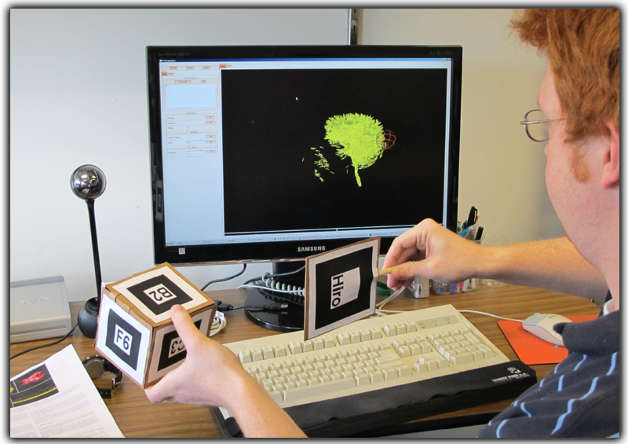

|
A user interacts with 3D brain tract visualizations using a webcam and fiducial-based trackers that can be constructed cheaply in any home or office. Expert feedback indicated that model positioning with this approach is easier than in previous methods using traditional input devices or two-dimensional input interfaces, and that tract selection may be faster to execute using our tool, given training and practice. |